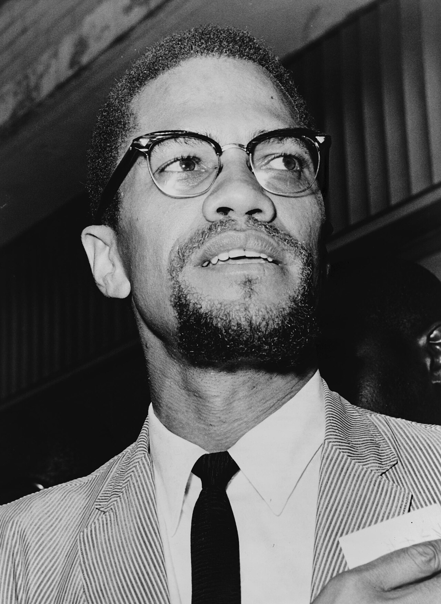

Directions: Fill in the chart as we study each stage of the record. Keep this page in your notebook. You will use it again on the review day before the unit test.

| Stage | What happened | The problem or claim | Evidence or result |
|---|---|---|---|
| Watts and the northern problem, 1965 | |||
| Chicago, 1966 | |||
| Black Power and the Panthers, 1966 | |||
| The economic turn, 1967 to 1968 | |||
| Memphis, 1968 |
The turn in one sentence. Finish this sentence in your own words, using at least two rows of the chart as evidence. The movement's methods stopped working in the North because...
| Stage | What happened | The problem or claim | Evidence or result |
|---|---|---|---|
| Watts and the northern problem, 1965 | Five days after the Voting Rights Act was signed, Watts rose in six days of violence that left thirty four dead. Northern segregation was de facto, built by covenants, redlining, white flight, and school lines. | There was no segregation statute at the center of the northern system for a court to strike down. | Residents named police treatment, poor housing, low pay, and weak schools as the grievances the new laws had not reached. |
| Chicago, 1966 | King rented a West Side tenement flat and led open housing marches into white neighborhoods under the Chicago Freedom Movement. | Housing and school segregation in a northern city, defended by residents rather than by a governor. | Mobs at Marquette Park threw bottles and bricks and a brick struck King. The Summit Agreement promised open housing steps and the city did not enforce it. |
| Black Power and the Panthers, 1966 | Carmichael raised Black Power at Greenwood on the Meredith March after his twenty seventh arrest. Newton and Seale founded the Black Panther Party in Oakland that October. | A decade of nonviolence had been answered with bombs, beatings, and acquittals, and the coalition's pace no longer matched the grievances. | SNCC and CORE moved toward Black leadership. The Panthers patrolled police stops, demanded jobs, housing, and an end to police brutality, and ran breakfast programs and health clinics. |
| The economic turn, 1967 to 1968 | King planned the Poor People's Campaign, an interracial army of the poor to camp in Washington and demand federal action on poverty. | Legal equality had cost the nation little. Equality in wages and housing would cost far more, and the old coalition would not pay it. | The plan drew little support from the coalition of 1964 and 1965. After King's assassination the campaign was carried on as Resurrection City. |
| Memphis, 1968 | Black sanitation workers struck after two workers were killed by a malfunctioning truck, and the city refused to recognize their union. King came to support them. | The claim under the wages was dignity, stated on the strikers' signs. | The signs read I Am a Man. A march King led in late March broke into violence, he returned to lead a peaceful one, and he was assassinated on April 4, 1968, before it could be held. |
The turn in one sentence. Strong answers join a northern structure fact to a methods fact from two rows. The southern methods had forced officials to enforce court orders against statutes. In the North the separation was built from housing, lending, and custom, defended by mobs and unenforced agreements, so the movement argued over new instruments: Black political power, community programs, and an economic campaign aimed at Washington.